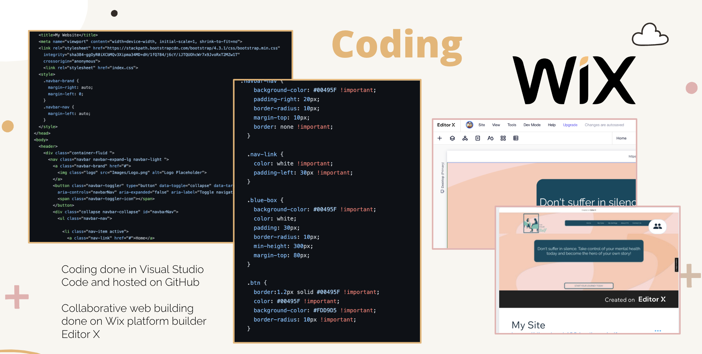
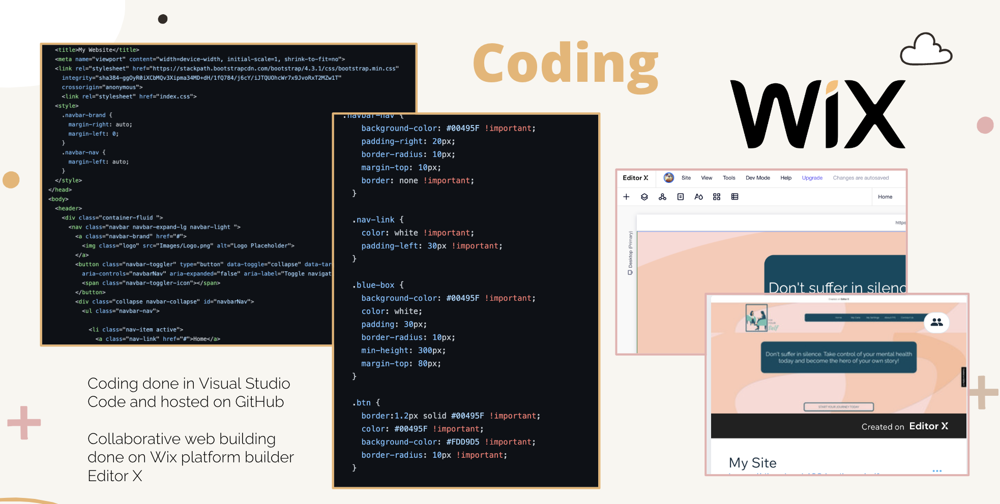

UI Style Tile
When creating the UI style, we wanted an overall feel of trustworthiness and positive energy. Original iterations of the color palette wound up being extremely ugly in practice (a weird avocado green shade that came across very dated and unpleasant). In some parts of the prototypes, we even wound up tinting and overlapping some of these hues to create cohesion. For UI imagery, we used image creators like StorySet and Canva, which allowed us to import our own hex values to make vector images.
Color Palette + Images
Muted colors in modern but still comforting, accessible hues.Colors were also used with varied tints, as we overlapped some transparent design elements to create cohesion between sections (Accessibility analysis showed poor feedback and contrast). Images were created using storySet and Canva.
 

User Persona

Jenna is a combination of elements of all three prior proto-personas. Jenna is a fair mix of the data collected in the student survey and presents with common adolescent problems. Key takeaways: Jenna doesn’t want to admit she needs help (struggles to take the first step in accessing mental health care) and she is approaching college-aged, so may start feeling more and more overwhelmed as the months pass.